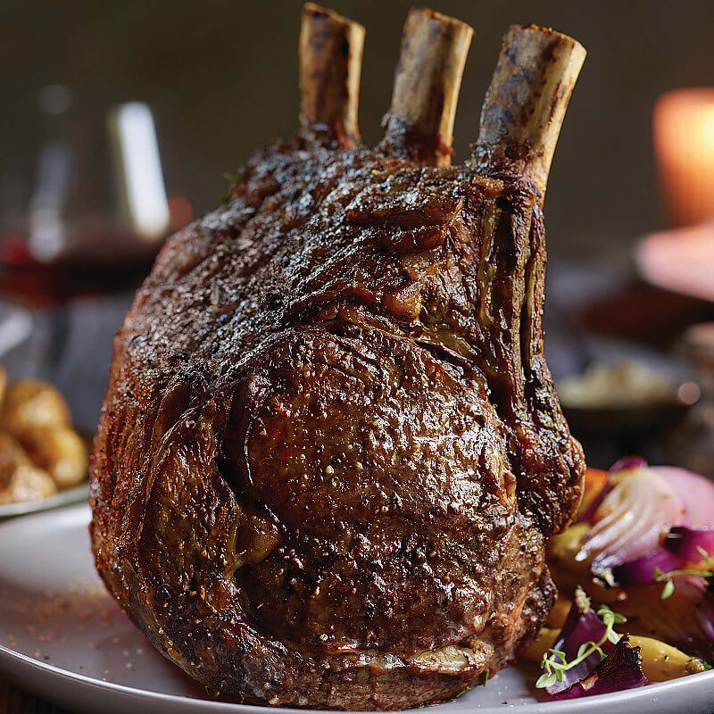

Prime Rib

Description
Prime rib claims center stage during holiday season for a very good reason.
It is the king of beef cuts. A bone-in prime rib roast is also called a
standing rib roast, because you position the roast majestically on its
rib bones in the roasting pan to cook it. Beautifully marbled with fat,
this roast is rich, juicy, and tender—a feast for the eyes and the belly.
Ingredients
- 1 standing rib roast, bones cut away and tied back on
- Salt
- Fresh black pepper
Steps
- Salt the roast and let sit at room temp
- Tie with kitchen string
- Preheat the oven to 500 F and season the roast
- Place the roast fat-side up in a roasting pan
- Brown the roast at high temperature for 15 minutes
- Lower the oven to 325 for 13-15 minutes per pound of roast, until 120 F
- Let the roast rest for 15-30 minutes
- Slice and serve